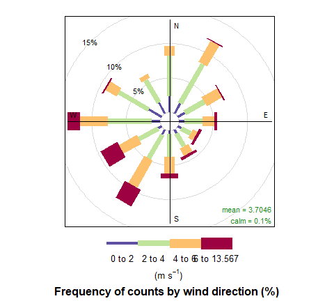

worldmet - R package for accessing NOAA Integrated Surface Database (ISD) meteorological observations
worldmet provides an easy way to access data from the NOAA Integrated Surface Database (ISD). The ISD contains detailed surface meteorological data from around the world for over 35,000 locations. See also the map.
The package outputs (typically hourly meteorological data) work very well with the openair package.
Installation
Installation can be done in the normal way:
install.packages("worldmet")The development version can be installed from GitHub. Installation of worldmet from GitHub is easy using the devtools package.
# install.packages("devtools")
devtools::install_github("davidcarslaw/worldmet")Example
To search for meteorological sites the user can search by the name or partial name of the site in upper or lower case. The getMeta() function will return all site names that match the search string. The most important information returned is the code, which can then be supplied to the importNOAA() function that downloads the data.
For example, to search for site “heathrow”:
library(worldmet)
## user getMeta function to search for sites
## note code to be used in importNOAA
getMeta(site = "heathrow")
#> # A tibble: 1 × 12
#> usaf wban station ctry st call latitude longitude `elev(m)` begin
#> <chr> <chr> <chr> <chr> <chr> <chr> <dbl> <dbl> <dbl> <date>
#> 1 037720 99999 HEATHR… UK <NA> EGLL 51.5 -0.461 25.3 1948-12-01
#> # ℹ 2 more variables: end <date>, code <chr>Often we have a latitude / longitude of interest. A search can be made based on supplied decimal coordinates and the top n nearest sites are returned. The map shows the location searched by the user (red dot) and markers showing the nearest meteorological stations. Click on a station marker to obtain the code and other basic information.
## search for near a specified lat/lon - near Beijing airport
## returns 'n' nearest by default
info <- getMeta(lat = 40, lon = 116.9)
info
#> # A tibble: 10 × 15
#> usaf wban station ctry st call latitude longitude `elev(m)` begin
#> <chr> <chr> <chr> <chr> <chr> <chr> <dbl> <dbl> <dbl> <date>
#> 1 5451… 99999 BEIJIN… CH <NA> ZBAA 40.1 117. 35.4 1945-10-31
#> 2 5452… 99999 TIANJIN CH <NA> <NA> 39.1 117. 5 1956-08-20
#> 3 5452… 99999 BINHAI CH <NA> ZBTJ 39.1 117. 3 1981-11-25
#> 4 5453… 99999 TANGSH… CH <NA> <NA> 39.6 118. 29 1956-08-20
#> 5 5440… 99999 HUAILAI CH <NA> <NA> 40.4 116. 538 1956-08-20
#> 6 5430… 99999 FENGNI… CH <NA> <NA> 41.2 117. 661 1957-06-01
#> 7 5442… 99999 CHENGDE CH <NA> <NA> 41.0 118. 423 1956-08-20
#> 8 5443… 99999 QINGLO… CH <NA> <NA> 40.4 119. 228 1957-06-02
#> 9 5453… 99999 LETING CH <NA> <NA> 39.4 119. 12 1957-06-01
#> 10 5460… 99999 BAODING CH <NA> <NA> 38.7 115. 17 1956-08-20
#> # ℹ 5 more variables: end <date>, code <chr>, longr <dbl>, latr <dbl>,
#> # dist <dbl>
To obtain the data the user must supply a code (see above) and year or years of interest. For example, to download data for Heathrow Airport in 2010 (code 037720-99999):
met_london <- importNOAA(code = "037720-99999", year = 2010)
head(met_london)
#> # A tibble: 6 × 25
#> code station date latitude longitude elev ws wd
#> <fct> <fct> <dttm> <dbl> <dbl> <dbl> <dbl> <dbl>
#> 1 037720-999… HEATHR… 2010-01-01 00:00:00 51.5 -0.461 25.3 3.27 17.4
#> 2 037720-999… HEATHR… 2010-01-01 01:00:00 51.5 -0.461 25.3 3.1 6.13
#> 3 037720-999… HEATHR… 2010-01-01 02:00:00 51.5 -0.461 25.3 3.1 15.6
#> 4 037720-999… HEATHR… 2010-01-01 03:00:00 51.5 -0.461 25.3 2.93 17.0
#> 5 037720-999… HEATHR… 2010-01-01 04:00:00 51.5 -0.461 25.3 2.77 0.606
#> 6 037720-999… HEATHR… 2010-01-01 05:00:00 51.5 -0.461 25.3 2.43 356.
#> # ℹ 17 more variables: air_temp <dbl>, atmos_pres <dbl>, visibility <dbl>,
#> # dew_point <dbl>, RH <dbl>, ceil_hgt <dbl>, cl_1 <dbl>, cl_2 <dbl>,
#> # cl_3 <dbl>, cl <dbl>, cl_1_height <dbl>, cl_2_height <dbl>,
#> # cl_3_height <dbl>, precip_12 <dbl>, precip_6 <dbl>, pwc <chr>, precip <dbl>A wind rose (for example) can easily be plotted using openair:

For the main worldmet website, see https://davidcarslaw.github.io/worldmet/.